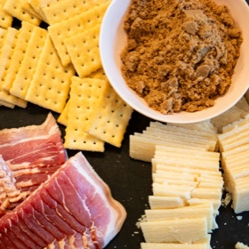

← All recipes
Parmesan Candied Bacon Crackers

Servings: 44 crackers · Prep: 15 minutes · Cook: 40 minutes
Ingredients
- 1 pound thin-sliced bacon
- 1 & 1/2 sleeves Club crackers (about 44 crackers)
- 8 ounces Parmesan cheese wedge
- 1/2 cup dark brown sugar
- 1 tbsp red pepper flakes
Directions
- Preheat oven to 300°F. Line a baking sheet with foil or parchment paper to catch the drippings from the crackers and place a cooling rack on top the lined baking sheet.
- To prep, thinly slice parmesan wedge, trying to match the width and length of the Club crackers. Slice the bacon into fours so they also match the length of the crackers.
- To assemble, place one piece of parmesan onto the cracker, top with bacon, followed by the brown sugar, and finally the red pepper flakes. Repeat with remaining crackers.
- Place each cracker onto the cooling rack side by side. Bake in the oven for 35-45 minutes, rotating the pan halfway through. Begin checking on them at 30 minutes. Once the bacon is cooked through and the edges of the crackers begin to brown, they are finished.
- Serve warm or at room temperature.
Notes
Store in the fridge in an air tight container for up to 4 days. To serve from the fridge, simply allow the crackers to return to room temp before serving.
Original source: thefancypantskitchen.com